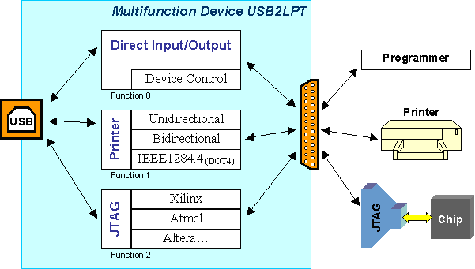
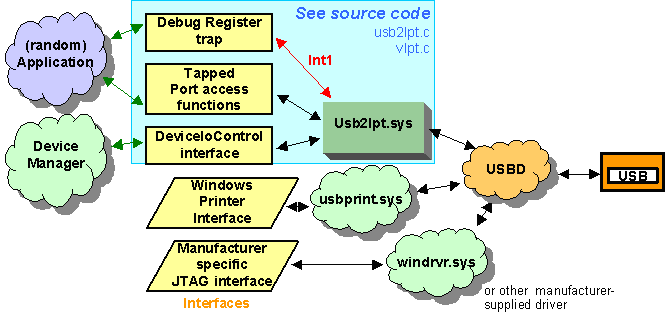

Main function is simply passing direct access commands to the parallel port, in conjunction with USB delays when reading a port. All parallel port extensions (PS/2, EPP, and ECP) are simulated and fully supported by firmware, but extra trapping by Windows driver may be necessary (is off by default).
The extra printer interface enables USB2LPT to be efficient on printers without loss of performance. All bidirectional printer protocols (Nibble Mode, Byte Mode, EPP, and ECP) are supported and used for the back-link bulk channel, but that's not tested! All known printers support Nibble Mode, and this is tested OK.

The third function (JTAG) is not yet implemented. There is a lack of documentation about data streams used. When implemented, USB2LPT could be even much faster than a conventional parallel JTAG adapter connected to a legacy parallel port. Instead, a HID interface is implemented, with some Feature Records and optional Input and Output interrupt pipes, running the same protocol as the primary interface. This HID interface is intended for redirection in user-mode level, eliminating the need for a kernel-mode driver and its certification for Win64 systems. However, a simple redirection feature as implemented in USB2LPT.SYS would work much slower; concatenation of IN and OUT instructions to microcode is always recommended.
The user must take care that the functions do not interfere! For example, do not try to print over USB2LPT while you are programming.
When plugging USB2LPT to a Windows host, there will be the following driver structure under the hood:

Structure of drivers
The third function is missing there too. A modified .INF file is sufficient for enabling this data path.
- READ_PORT_UCHAR()
- READ_PORT_USHORT()
- READ_PORT_ULONG()
- WRITE_PORT_UCHAR()
- WRITE_PORT_USHORT()
- WRITE_PORT_ULONG()